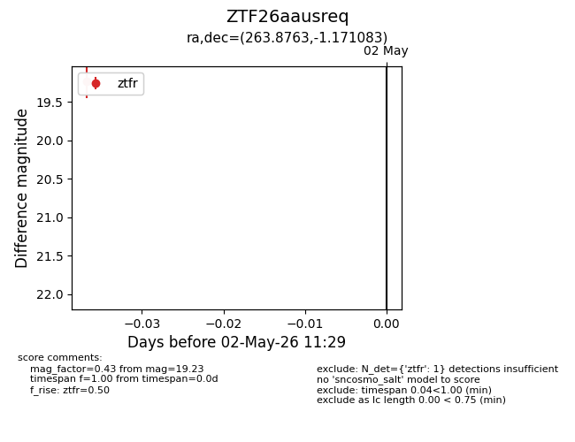
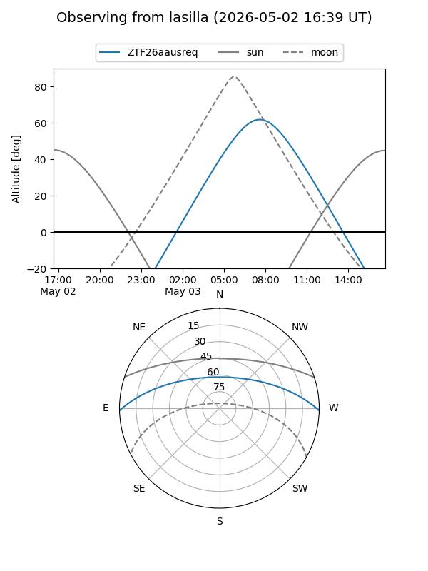
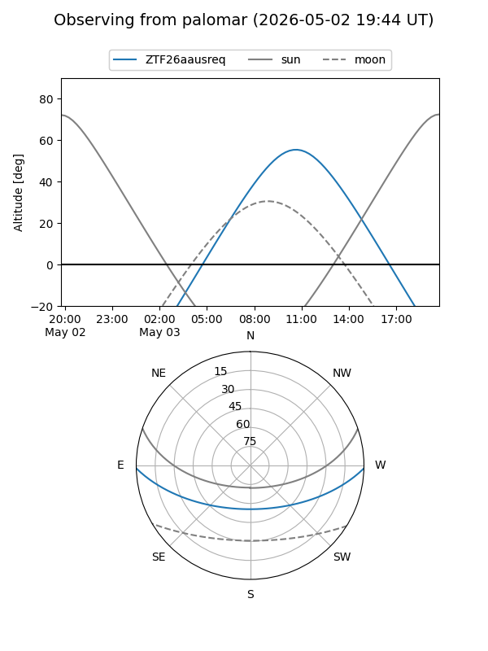

ZTF26aausreq
Target ZTF26aausreq at 2026-05-02 11:40
Aliases and brokers:
FINK: link
Lasair: link
ALeRCE: link
alt names
ZTF26aausreq (ztf,fink_ztf)
Coordinates:
equatorial (ra, dec) = 263.8763,-1.17108
equatorial (HMS+DMS) = 17:35:30.31,-01:10:15.90
galactic (l, b) = (22.9447,+16.26768)
Flags:
Photometry:
last ztfr=19.23
1 ztfr detections
Lightcurve

Visibility


Additional plots